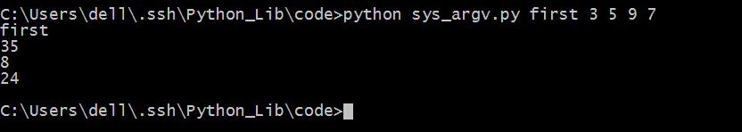
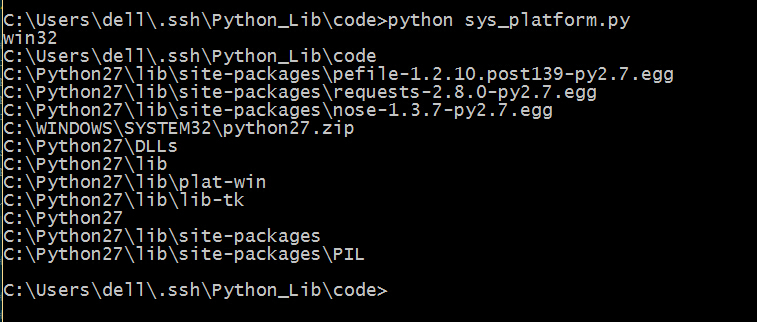

sys
这个模块也可以传入命令行参数，但是它的参数必须是指定的，没有argparse那么好用，毕竟，这个库的主要功能不是为了传递命令行参数。
基本使用
sys.argv获得传入的命令行参数。
# coding=utf-8
import sys
#默认第0个是程序自身
print sys.argv[1]
#默认传进来的参数都是字符串，所以这样的加法是直接相加
print sys.argv[2] + sys.argv[3]
#如果想要做加法的话需要这样相加
print int(sys.argv[2])+int(sys.argv[3])
#计算传进来的未知长度的数字之和
num = 0
for i in sys.argv[2:]:
num = num+int(i)
print num
保存为 sys_argv.py，运行，看一下结果。

{kind=link}
sys.platform()获得当前终端是Windows下还是Linux下。sys.exit(n)退出程序，它有一个可选的整数参数，当n为0是是正常退出，其他为不正常，可抛异常事件捕获，默认为0。注意，此处的
sys.exit()和os._exit()和exit()/quit()都能够退出Python程序
但是sys.exit()一般用在主线程中退出整个Python进程，因为在子线程中其无法结束主线程
而os._exit()不抛出异常，不执行清理工作，能够退出主线程exit()/quit()一般在交互式shell中使用。sys.path系统的环境变量，返回列表，还可以用python -m site查看
import sys
print sys.platform
path = sys.path
for i in path:
print i
sys.exit(0)
print "This won't run"
保存为 sys_platform.py，运行，看一下结果。 
{kind=link}
进阶操作
sys.modules()python导入了哪些库，返回元组。sys.versionPython解释器的版本信息。sys.hexversion用十六进制表示Python解释器的版本号。sys.maxint最大的int值sys.maxunicode最大的Unicode值sys.copyrightPython解释器的版权信息sys.version_infoPython解释器的详细信息sys.api_version解释器的C的API版本sys.exec_prefixPython文件的安装路径sys.byteorder本地字节规则的指示器，返回big表示big-endian，little表示little-endiansys.getdefaultencoding()返回你当前所用的默认编码格式。Python z.x返回ASCII，Python 3.x返回Unicodesys.setdefaultencoding()设定当前的默认编码格式sys.executable返回Python解释器的具体位置sys.getwindowsversion()获得Windows版本
import sys
print sys.version
print sys.version_info
print sys.hexversion
print sys.api_version
print sys.exec_prefix
print sys.executable
print sys.maxint
print sys.maxunicode
print sys.byteorder
print sys.getdefaultencoding()
print sys.getwindowsversion()
print sys.getfilesystemencoding()
modules = sys.modules
for i in modules.keys():
print i
print sys.copyright
保存为 sys_modules.py，运行，看一下结果。
{kind=link}
sys.platform解释器运行的平台名称sys.stdout标准输出流sys.stdin标准输入流sys.stderr错误输出流
import sys
data = sys.stdin
print data
sys.stdout.write("hello,world")
保存为 sys_std.py，运行，看一下结果。
{kind=link}
sys.getrecursionlimit()获得 python 最大递归深度sys.setrecursionlimit(15000)在 Mac 上默认为 1000